In this lab, an encryption process, following the AES Standard, was designed and implemented on an FPGA. Additionally, SPI communication was established between the FPGA and the MCU using wires on the provided development board. The MCU was used to send a plaintext message and a key to the FPGA, and the correctly encrypted message was sent back.
Design
The code for this lab can be found here, in the appropriate Git Repository.
The primary basis of this design was an FSM, where the various stages of encryption (adding a round key, mixing columns, sub bytes) were represented and executed by various states. In each state, the message was moved from output to input of the various modules, become more and more encrypted with each round.
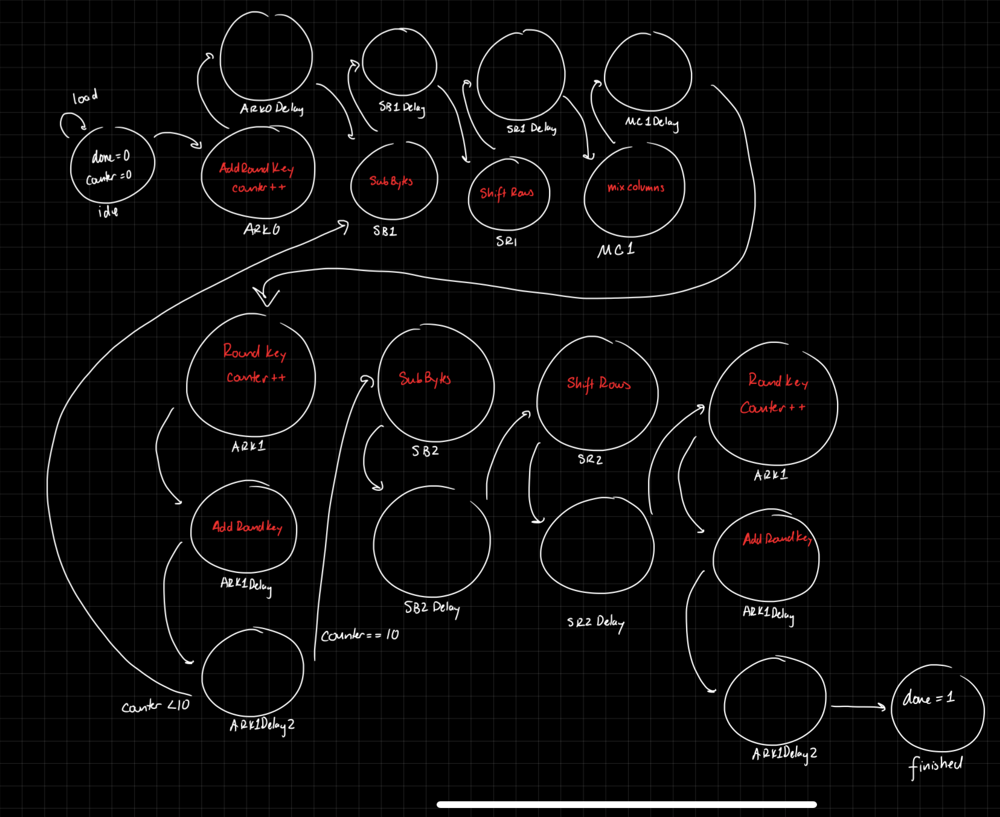
There are a lot of states that are used for delays, as there needed to be a cycle latency to allow for the calculations to happen. The AddRoundKey states, in particular, needed two cycles, as the RoundKey needed to be calculated, then the RoundKey had to be added. A total of six new modules (in addition to the modules found in the starter code) were written.
Block Diagram
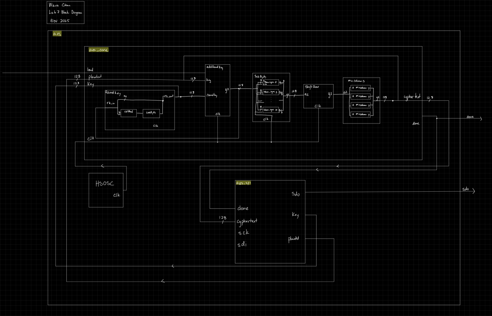
Schematic
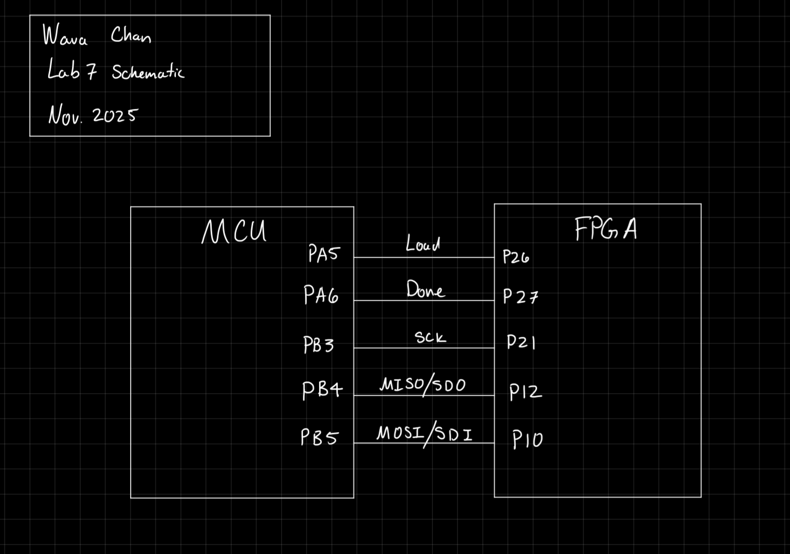
Results
Waveforms & Logic
Each submodule was tested using a testbench. Each module passed its testbench, and the waveforms are as seen below. First, (Figs. 4-7) I tested the modules that I built, then, I tested them all together (Fig. 9), and tested the provided module (Fig. 8).
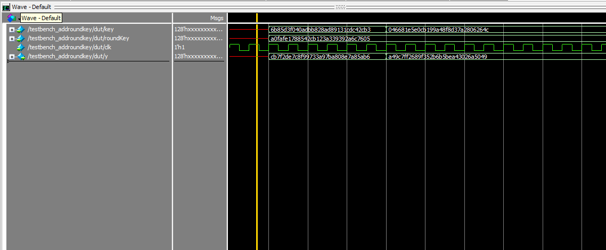
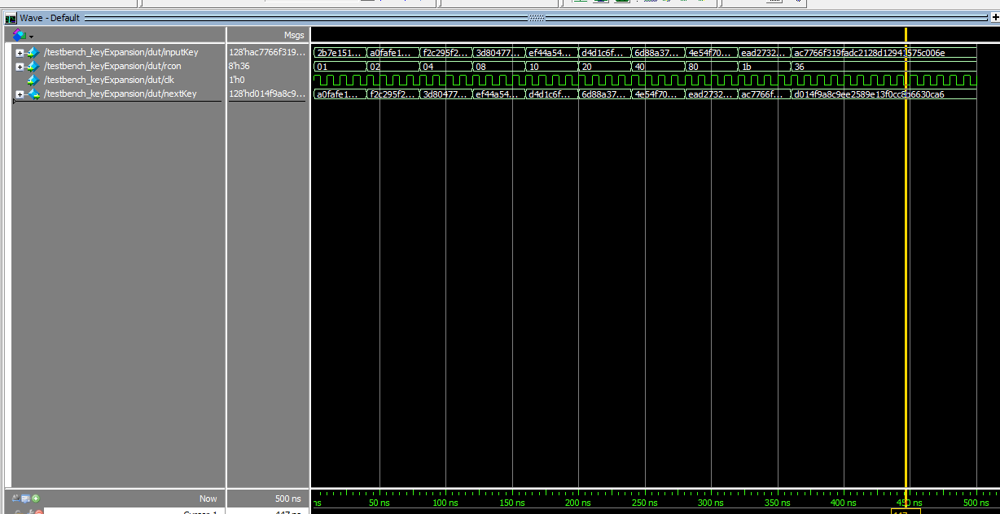
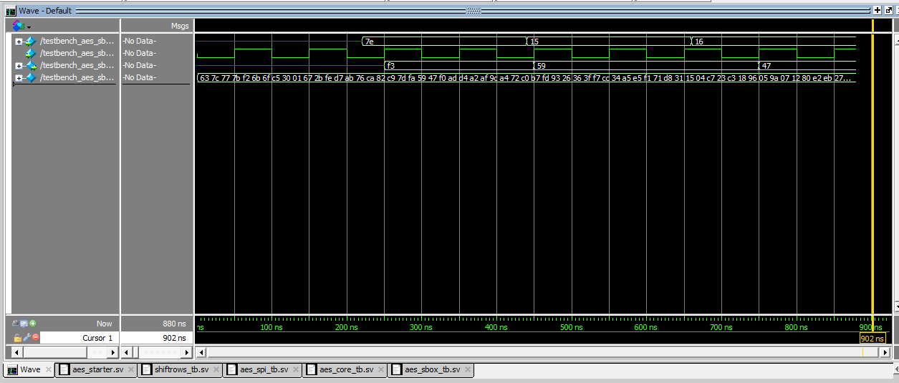
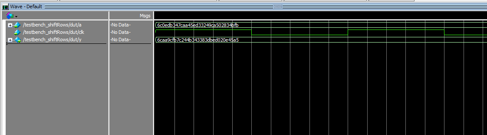
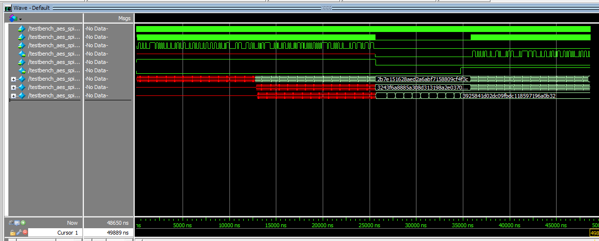
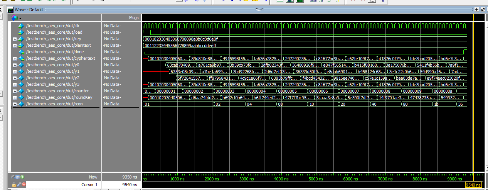
Then, the design was uploaded to hardware. The SPI communication was confirmed using the logic analyzer and the LED signals on the board. These denoted whether or not the message recieved from the FPGA correctly matched the desired encrypted message.
Conclusion
In the end, I was able to both implement the AES encryption standard on the FPGA, as well as establish communcation between the FPGA and the MCU using SPI. This was shown on the logic analyzer, and verified by the LEDs on the development board.
I spent 25 hours on this lab.
AI Prototype
I asked two different LLMs the two different prompts. I fed the first prompt into DeepSeek, and the following was produced:
// KeyExpansion module for AES - FIPS-197 compliant
// Purely combinational implementation
module KeyExpansion #(
parameter NK = 4, // Number of 32-bit words in initial key (4 for AES-128)
parameter NR = 10, // Number of rounds (10 for AES-128)
parameter KEY_WIDTH = 128 // Initial key width in bits
) (
input logic [KEY_WIDTH-1:0] prev_key, // Previous round key
input logic [7:0] round, // Current round number (0-10 for AES-128)
output logic [KEY_WIDTH-1:0] next_key // Next round key
);
// Internal signals
logic [31:0] prev_key_words [0:NK-1]; // Previous key as 32-bit words
logic [31:0] next_key_words [0:NK-1]; // Next key as 32-bit words
logic [31:0] temp; // Temporary word for key expansion
logic [31:0] rcon_word; // Round constant word
// Break previous key into 32-bit words
generate
for (genvar i = 0; i < NK; i++) begin
assign prev_key_words[i] = prev_key[KEY_WIDTH-1-32*i -: 32];
end
endgenerate
// Round Constant (Rcon) lookup - FIPS-197 Section 5.2
always_comb begin
case (round)
4'h1: rcon_word = 32'h01000000;
4'h2: rcon_word = 32'h02000000;
4'h3: rcon_word = 32'h04000000;
4'h4: rcon_word = 32'h08000000;
4'h5: rcon_word = 32'h10000000;
4'h6: rcon_word = 32'h20000000;
4'h7: rcon_word = 32'h40000000;
4'h8: rcon_word = 32'h80000000;
4'h9: rcon_word = 32'h1B000000;
4'hA: rcon_word = 32'h36000000;
default: rcon_word = 32'h00000000; // Round 0
endcase
end
// Key Expansion Core Logic - FIPS-197 Section 5.2
always_comb begin
// First word uses special transformation
temp = prev_key_words[NK-1];
if (round != 0) begin
// Apply RotWord then SubWord then XOR with Rcon
temp = SubWord(RotWord(temp)) ^ rcon_word;
end
// Calculate first word of next key
next_key_words[0] = prev_key_words[0] ^ temp;
// Calculate remaining words
for (int i = 1; i < NK; i++) begin
next_key_words[i] = prev_key_words[i] ^ next_key_words[i-1];
end
end
// Reassemble 32-bit words into 128-bit key
generate
for (genvar i = 0; i < NK; i++) begin
assign next_key[KEY_WIDTH-1-32*i -: 32] = next_key_words[i];
end
endgenerate
endmodule
// Interface definitions for assumed modules
interface SubWord_IF;
function logic [31:0] SubWord(input logic [31:0] word);
endinterface
interface RotWord_IF;
function logic [31:0] RotWord(input logic [31:0] word);
endinterface
// Example usage with testbench
module KeyExpansion_tb;
// Test parameters for AES-128
localparam NK = 4;
localparam NR = 10;
localparam KEY_WIDTH = 128;
logic [KEY_WIDTH-1:0] prev_key;
logic [7:0] round;
logic [KEY_WIDTH-1:0] next_key;
// Instantiate KeyExpansion module
KeyExpansion #(
.NK(NK),
.NR(NR),
.KEY_WIDTH(KEY_WIDTH)
) u_key_expansion (
.prev_key(prev_key),
.round(round),
.next_key(next_key)
);
// Test case from FIPS-197 Appendix A.1
initial begin
// Round 0 key (initial key)
prev_key = 128'h2b7e151628aed2a6abf7158809cf4f3c;
round = 8'h00;
#10;
$display("Round %0d Key: %h", round, prev_key);
// Calculate Round 1 key
round = 8'h01;
#10;
$display("Round %0d Key: %h", round, next_key);
// Expected: a0fafe1788542cb123a339392a6c7605
// Calculate Round 2 key
prev_key = next_key;
round = 8'h02;
#10;
$display("Round %0d Key: %h", round, next_key);
// Expected: f2c295f27a96b9435935807a7359f67f
$finish;
end
endmodule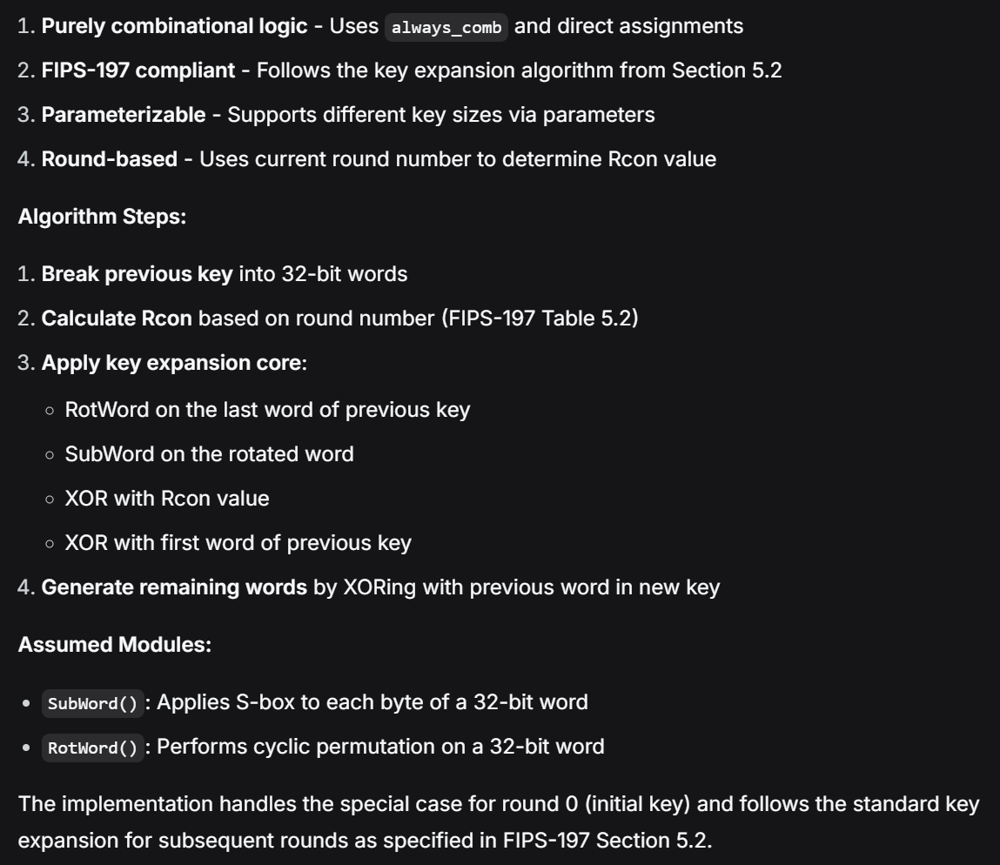
This includes specific test cases from the Appendix, interestingly.
When I fed the second prompt into ChatGPT (without attaching the FIPS document), the following was produced.
// key_expander.sv
// Implements the provided pseudo-code iteratively in hardware (SystemVerilog).
// Assumes module1 and module2 exist and have the shown port interfaces.
module key_expander #(
parameter int Nk = 4, // number of key words in input key
parameter int Nr = 10, // round count parameter used to size output
parameter int WORD_BITS = 32 // bits per word (default 4 bytes * 8)
) (
input logic clk,
input logic rst_n, // active-low reset
input logic start, // start signal (pulse)
input logic [WORD_BITS-1:0] key_words [0:Nk-1], // initial key split into Nk words
input logic [WORD_BITS-1:0] Rcon [0:((4*Nr+3)/Nk)+1], // rcon array; supply enough entries
output logic done, // asserted for one cycle when expansion complete
output logic [WORD_BITS-1:0] w_out [0:4*Nr+3] // full expanded key words
);
// local constants
localparam int W_LEN = 4*Nr + 4; // highest index is 4*Nr+3 inclusive -> length = (4*Nr+4)
// internal memory for w
logic [WORD_BITS-1:0] w_mem [0:W_LEN-1];
// control / counters
typedef enum logic [1:0] {IDLE=2'b00, LOAD_INIT=2'b01, EXPAND=2'b10, DONE=2'b11} state_t;
state_t state, next_state;
integer i; // used in non-synth loops if required for initialization (not in main FSM)
// index registers for runtime
logic [$clog2(W_LEN+1)-1:0] idx; // current i (0..W_LEN-1) - wide enough
// wires for temp and module outputs
logic [WORD_BITS-1:0] temp;
logic [WORD_BITS-1:0] mod2_out; // output of module2(temp) when used
logic [WORD_BITS-1:0] mod1_out; // output of module1(input)
// --- Black-box module interfaces assumed ---
// module2: in -> out (combinational)
// module1: in -> out (combinational)
// If your actual modules have different port names / are clocked, adapt accordingly.
module2 mod2_inst (
.in (temp),
.out (mod2_out)
);
module1 mod1_inst (
.in ( /* will be wired below via mod1_input */ ),
.out (mod1_out)
);
// Because we need to call module1 on either temp or module2(temp), create a combinational MUX
logic [WORD_BITS-1:0] mod1_input;
always_comb begin
// default
mod1_input = temp;
// The pseudo-code uses module1(module2(temp)) when (i mod Nk) == 0
// and module1(temp) when Nk > 6 and (i mod Nk) == 4.
// We'll select module1_input in the FSM at the time it's needed (see combinational block below).
end
// Patch module1 instantiation connection: using generate-like wiring
// (connect the chosen input signal to module1.in using a continuous assignment)
// Note: SystemVerilog does not allow port connection to an expression in instantiation,
// so we connect via wire 'mod1_input'.
// Reconnect mod1_inst properly:
// (We've declared mod1_inst earlier incorrectly; re-declare properly using an instance with ports.)
// For clarity, re-declare module instances correctly below (remove previous incorrect instantiations).
// To keep the file self-contained and synthesizable, we'll re-declare them properly now.
endmodule
// --- Separate declarations for module1/module2 interfaces ---
// Provide simple interface declarations so this file can compile.
// Replace with actual implementations or link during synthesis.
module module2 (
input logic [31:0] in,
output logic [31:0] out
);
// black-box: placeholder pass-through (replace in synthesis / simulation with real module)
assign out = in;
endmoduleChatGPT also provided a top level module with (what it claimed) is a working FSM.
module module1 (
input logic [31:0] in,
output logic [31:0] out
);
// black-box: placeholder pass-through
assign out = in;
endmodule
module key_expander #(
parameter int Nk = 4,
parameter int Nr = 10,
parameter int WORD_BITS = 32
) (
input logic clk,
input logic rst_n,
input logic start,
input logic [WORD_BITS-1:0] key_words [0:Nk-1],
input logic [WORD_BITS-1:0] Rcon [0:((4*Nr+3)/Nk)+1],
output logic done,
output logic [WORD_BITS-1:0] w_out [0:4*Nr+3]
);
localparam int W_LEN = 4*Nr + 4; // number of w entries
// memory for w
logic [WORD_BITS-1:0] w_mem [0:W_LEN-1];
// FSM states
typedef enum logic [1:0] {IDLE=2'b00, LOAD_INIT=2'b01, EXPAND=2'b10, DONE_ST=2'b11} state_t;
state_t state, next_state;
// runtime index i
logic [$clog2(W_LEN+1)-1:0] i_reg;
logic [$clog2(W_LEN+1)-1:0] i_next;
// temp and combinational module wires
logic [WORD_BITS-1:0] temp_reg;
logic [WORD_BITS-1:0] temp_next;
logic [WORD_BITS-1:0] mod2_out;
logic [WORD_BITS-1:0] mod1_out;
logic [WORD_BITS-1:0] mod1_input;
// Module declarations (combinational)
// IMPORTANT: change bitwidths to WORD_BITS if your module supports parameterization.
module2 mod2_inst (
.in (temp_reg),
.out (mod2_out)
);
// mod1 will take either temp_reg or mod2_out depending on condition
assign mod1_input = ( (i_reg % Nk) == 0 ) ? mod2_out : temp_reg;
module1 mod1_inst (
.in (mod1_input),
.out (mod1_out)
);
// next-state logic (combinational)
always_comb begin
next_state = state;
i_next = i_reg;
temp_next = temp_reg;
done = 1'b0;
case (state)
IDLE: begin
if (start) begin
next_state = LOAD_INIT;
// set i to 0 in sequential block
end
end
LOAD_INIT: begin
// load initial Nk words from key_words into w_mem[0..Nk-1]
// We'll do one word per cycle to be safe (can be changed to parallel load if desired)
if (i_reg < Nk) begin
// will write in sequential block
i_next = i_reg + 1;
if (i_next == Nk) begin
next_state = EXPAND;
end
end
end
EXPAND: begin
// expand until i <= 4*Nr+3 (i runs from Nk to (4*Nr+3) included)
if (i_reg <= 4*Nr+3) begin
// compute temp = w[i-1]
// We'll read w_mem[i_reg-1] in sequential logic, but decide operations combinationally here.
// Determine conditions for module invocation and Rcon XOR
// The final assignment to w[i] will be done in sequential block.
// Advance index
i_next = i_reg + 1;
// stay in EXPAND until we have computed up to 4*Nr+3
if (i_reg == (4*Nr+3)) begin
next_state = DONE_ST;
end
end
end
DONE_ST: begin
done = 1'b1;
// wait one cycle and go back to IDLE
next_state = IDLE;
end
default: next_state = IDLE;
endcase
end
// sequential: perform actual memory writes & register updates
always_ff @(posedge clk or negedge rst_n) begin
if (!rst_n) begin
state <= IDLE;
i_reg <= 0;
temp_reg <= '0;
// Clear memory (optional)
for (int idx = 0; idx < W_LEN; idx++) w_mem[idx] <= '0;
end else begin
state <= next_state;
case (state)
IDLE: begin
if (start) begin
i_reg <= 0;
end
end
LOAD_INIT: begin
// load key_words into w_mem sequentially (one per cycle)
// w[i] <- key_words[i]
w_mem[i_reg] <= key_words[i_reg];
temp_reg <= key_words[i_reg]; // not used; keep consistent
i_reg <= i_next;
end
EXPAND: begin
// temp <- w[i-1]
temp_reg <= w_mem[i_reg - 1];
// compute temp_mod as per condition:
// if (i mod Nk == 0) temp <- module1(module2(temp)) (+) Rcon[i/Nk]
// else if (Nk > 6 && i mod Nk == 4) temp <- module1(temp)
// then w[i] <- w[i-Nk] (+) temp
// Implementation detail: module2 and module1 are combinational and read temp_reg
// Note: mod2_out and mod1_out are derived from temp_reg via the module instances
logic [WORD_BITS-1:0] computed_temp;
computed_temp = temp_reg; // default
if ((i_reg % Nk) == 0) begin
// temp after module1(module2(temp))
// mod2_out is module2(temp_reg), mod1_out is module1(mod2_out) via mod1_input assign
// then XOR with Rcon[i/Nk]
computed_temp = mod1_out ^ Rcon[i_reg / Nk];
end else if ((Nk > 6) && ((i_reg % Nk) == 4)) begin
// temp <- module1(temp)
// mod1_out will be module1(temp_reg)
computed_temp = mod1_out;
end else begin
// no change; computed_temp = temp_reg
computed_temp = temp_reg;
end
// w[i] <- w[i-Nk] (+) computed_temp
w_mem[i_reg] <= w_mem[i_reg - Nk] ^ computed_temp;
// advance i
i_reg <= i_next;
end
DONE_ST: begin
// hold outputs in memory, set done for one cycle via combinational done
i_reg <= 0;
end
default: begin
i_reg <= 0;
end
endcase
end
end
// map internal memory to output port
// continuous assignment copies memory contents to w_out
genvar g;
generate
for (g = 0; g < W_LEN; g = g + 1) begin : OUT_MAP
assign w_out[g] = w_mem[g];
end
endgenerate
endmodule
// --- Dummy module stubs included so file compiles ---
module module2 (
input logic [31:0] in,
output logic [31:0] out
);
// placeholder: replace with real implementation
assign out = in; // no-op
endmodule
module module1 (
input logic [31:0] in,
output logic [31:0] out
);
// placeholder: replace with real implementation
assign out = in; // no-op
endmodule
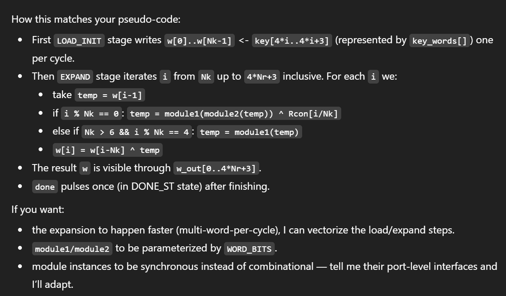
This response took noticably longer than the DeepSeek response, and is much more complex (and convoluted)
Overall, attaching reference documentation resulted in better, more informed results. As expected, more information and increased specificity means a better output more aligned with what I want.